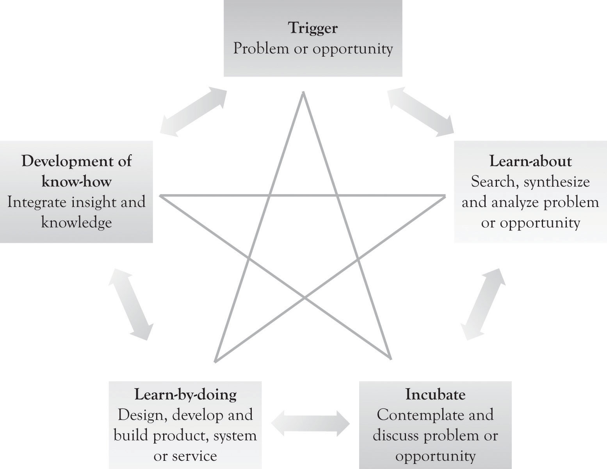

The engines behind research and development are creativity and innovation. CreativityThe ability to generate ideas. is typically defined as the ability to generate ideas. Creativity is actually a subset of innovation and refers primarily to the process of idea generation. InnovationsThe ideas, the products, the services, and processes that (a) are perceived as being new and different and (b) have been designed, built, and commercialized. are defined more narrowly as the ideas, the products, the services, and processes that (a) are perceived as being new and different and (b) have been designed, built, and commercialized. Innovation thus includes both creative idea generation and the actual implementation of the idea.Cf. Hülsheger, Anderson, and Salgado (2009). An invention is an innovation that is not ready for prime time. Inventions are ideas that have been built or conceptualized, but not widely used and available and usually not commercialized.
Creativity is the force behind innovation and invention. Creativity has been studied for many years and a variety of models and insights have been developed in order to understand and facilitate the creative process. Figure 6.1 "Creative Problem Solving and the Creative Star Model" illustrates an updated five-phase model of the creative process that incorporates problem solving, leaning-about, and the learning-by-doing concepts.The classic four-stage model of creativity was published by Wallas in 1926. The art of thought. New York: Harcourt Brace Jovanovich.. See Lubart (2001), for an overview of the various approaches for modeling creativity. The updated model used in this book has been adapted and extrapolated from the following papers: An, Hunt, and Sanders (1993); Cerveny, Garrity, & Sanders (1990). Here are the details of the model:
TriggerThe problem or opportunity that initiates the creative process.. This is the problem or opportunity that initiates the creative process. The trigger could occur at home, work, play, or while traveling.
Figure 6.1 Creative Problem Solving and the Creative Star Model
Learn-about activitySearching for information and synthesizing that information.. This involves searching for information and synthesizing that information. It also involves struggling to understand the information and the creation of new knowledge by analyzing the problem or opportunity. The learning-about activities include reading books and magazines; one-on-one dialog with colleagues and knowledgeable individuals; looking at competitor offerings; interaction with suppliers, customers, universities and research institutes; and attending courses, trade shows, symposia, and conferences.
Incubate. IncubationGives the mind time to work on the problem in the background. gives the mind time to work on the problem in the background. This not only involves contemplation, but also involves engaging in one-to-one dialog with family, friends, and colleagues on the problem or opportunity.
Learn-by-doing. This involves designing and constructing a solution to the problem or opportunity. It also involves designing and building a prototype, modeling with diagrams, drawing pictures, developing flowcharts, drawing digital or CAD diagrams in 2D or 3D CAD, conducting simulation, identifying system specifications, developing system mock-ups, developing business plans, and even the use of narratives. Designing and constructing might include very rough diagrams or developing mock-up pictures of the product or service by using sketching, drawing software, photo software, or presentation software. If the product is a software, then a mock-up screen can be designed by using a word processor, presentation software, or mock-up software. If the idea behind the product or service involves a complex process or business process, then flow diagrams can be constructed or a business process diagram can be developed with presentation software or specialized flowchart and business process diagramming software.
Development of know-howThe expertise, skill, and knowledge that can be used to produce a product or service.. This is the expertise, skill, and knowledge that can be used to produce a product or service.In large organizations, this information may be put into complex knowledge management repositories and is referred to as knowledge management. A significant amount of knowledge is actually maintained in the largest knowledge repository of all, the World Wide Web. It is the outcome of the creative process that can be used to provide insight and to build and construct products, services, and business processes. It is the applied and practical knowledge that can be used to make the product or service. In start-ups and small organizations, this knowledge is in the minds of the owner, management and staff, and developers. The knowledge may be codified in lists or in what we refer to as Knowledge Books. These Knowledge Books can be maintained on tablets and spiral notebooks and in computer files. They can contain the following information: